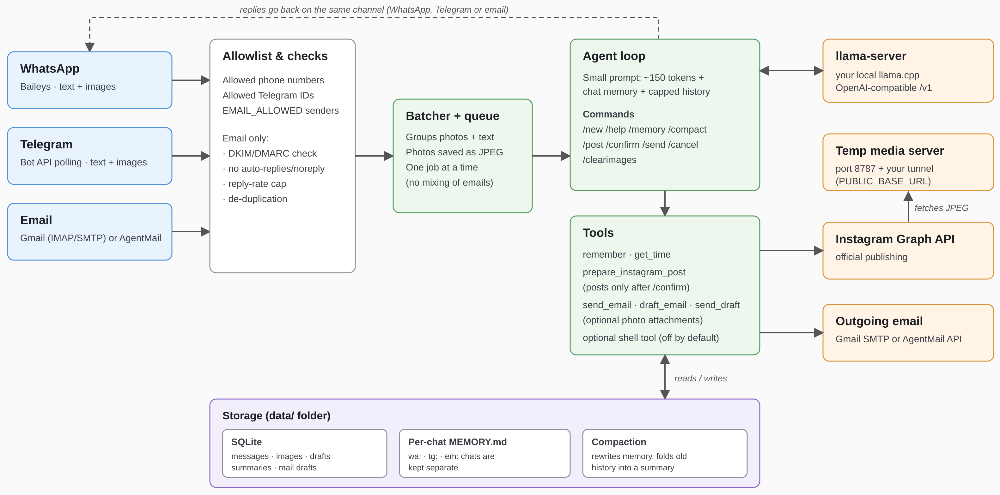

Link to the PawLite GitHub Repository
Tired of the security, performance and token cost issues that come with most autonomous agents, I created this PawLite. It is a locally-run, llama.cpp-compatible companion designed to work with models of all sizes (7B–120B). Pawlite aims to bridge the gap between AI hype and practical reality, serving as a seamless assistant through this technological singularity era.
"PawLite is a lightweight autonomous AI agent built to combat the financial, context, and tool bloat found in assistants/agents like OpenClaw and Hermes. WhatsApp + Telegram + Email ⇄ SQLite ⇄ your local llama.cpp server, with
Instagram posting. Send photos in any channel; the agent drafts a caption and, once you confirm,
publishes the post through Instagram’s official Graph API. PawLite is a highly optimized core, consisting of just ~900 lines of TypeScript, no framework, secure (running isolated in a docker container), easy to scale and add skills to.

By default each request sends only a ~150-token system prompt, the chat’s MEMORY.md, capped history, and 3 tiny tools.
Compare that with the ~70K tokens an “agent platform” sends per turn: prefill on a local model drops from tens of
seconds to a second or two.
Requires Node 22+. You can get a recent version together with npm here.
npm install
cp .env.example .env # then edit it
llama-server -m your-model.gguf -c 8192 -np 1 --jinja --port 8080
npm run chat # test the LLM side without any chat app
npm start
It’s quick and easy to run your agent with npm, however following npm install you can also build (bash docker compose build --no-cache) and run Docker (recommended for security reasons) asbash docker compose up,bash docker compose logs -fto watch the logs,
bash docker compose down -dto run the container in a background as a daemon andbash docker compose downto stop the container running in the background. With docker your agent will run in isolation.
Set ALLOWED_NUMBERS (digits, country code), run npm start, scan the QR under
Settings → Linked Devices. (PAIRING_PHONE gives you a code instead of a QR. SELF_CHAT=true uses “Message yourself”.)
/newbot → put the token in TELEGRAM_BOT_TOKEN.ALLOWED_TELEGRAM_IDS. Not sure what it is? Start the bot with the list empty,Ignored Telegram message from user id … log line.WHATSAPP_ENABLED=false if you only want Telegram.The bot polls the mailbox (default every 120 s), answers mail from addresses in EMAIL_ALLOWED, and replies in the
same thread, marking handled mail as read. It answers people who write to it; it doesn’t sit in your personal inbox or
send unprompted mail. Image attachments work, so you can email photos to post on Instagram, then reply /confirm.
Gmail (or any IMAP/SMTP mailbox). Create a dedicated account, turn on 2-Step Verification. For Gmail follow the steps below:
Set IMAP_USER + IMAP_PASSWORD. The Gmail hosts are the defaults; for Fastmail or
your own domain, change IMAP_HOST / SMTP_HOST. If it can’t connect, check that IMAP is enabled for the account.
Workspace admins can block app passwords.
Forgery check: mail is ignored if the receiving server reports DKIM/DMARC failure (EMAIL_REQUIRE_AUTH=true).
AgentMail. Create an inbox and an API key in the AgentMail console; set AGENTMAIL_API_KEY and
AGENTMAIL_INBOX_ID (the inbox address). Uses the REST API, no IMAP. AgentMail doesn’t expose a sender-verification
verdict this project relies on, so only EMAIL_ALLOWED protects you there. Use an obscure inbox address.
Both can run at once. Safeguards: allowlist, auto-reply/bulk/noreply senders skipped, quoted history stripped,
de-duplication (never answers the same message twice), and a per-sender reply cap (EMAIL_MAX_REPLIES_PER_HOUR) to stop bot-to-bot loops.
Posting uses Meta’s official Content Publishing API. You need:
instagram_business_content_publish permission. Put the token in IG_ACCESS_TOKEN and the account’s numericIG_USER_ID. (If your token comes from Facebook Login instead, setIG_GRAPH_HOST=https://graph.facebook.com; its permission is named instagram_content_publish.)HTTP_PORT (default 8787); expose it with a tunnel and set PUBLIC_BASE_URL:cloudflared tunnel --url http://localhost:8787 # prints https://something.trycloudflare.com
Only the images of the post being published are served, under random one-time tokens, and only while publishing.
`IG_USER_ID`, `IG_ACCESS_TOKEN` and `PUBLIC_BASE_URL` must all be set or posting stays disabled.
## Posting flow
1. Send 1–10 photos (as photos or as image files). Quick successions are batched, so albums work.
2. Say what you want: *"post these to Instagram, caption about our hike"*. The model writes a caption and creates a
**draft**. Or skip the model with `/post <your caption>`.
3. The bot shows the exact draft. Reply **`/confirm`** to publish or `/cancel` to discard. Nothing is published without `/confirm`,
and `/confirm` is handled by code, not by the model, so a confused or manipulated model can't post on its own.
Commands: `/post <caption>`, `/confirm`, `/cancel`, `/clearimages`, `/new`, `/help`.
Images are converted to what Instagram requires: sRGB JPEG, ≤1440px wide, under 8 MB, aspect ratio **padded** (white bars)
into the allowed 4:5–1.91:1 range rather than cropped. Carousels (2–10 images) are cropped by Instagram to the first
image's ratio. Captions are limited to 2,200 characters and 30 hashtags; Instagram allows 100 API posts per 24 hours.
Unposted images are deleted after 7 days.
Groups: in WhatsApp/Telegram groups the bot answers only when an allowed member mentions it (`@Claw` / `@your_bot`),
and a photo needs that mention in its caption. For multi-image posts, use a direct chat.
## Memory and compaction
Per chat, the bot keeps (1) conversation history in SQLite, (2) a long-term `MEMORY.md` the model writes with its
`remember` tool, and (3) a running summary of older messages. Compaction keeps (1) and (2) from growing forever.
**When it runs:** after every reply, the bot estimates the chat's size in tokens (characters ÷ `COMPACT_CHARS_PER_TOKEN`,
default 4, so it is a rough estimate, not the model's real tokenizer). If a limit is passed, it compacts that chat *after*
sending the reply. `/compact` runs it on demand, `/memory` shows what's remembered. An optional timer
(`COMPACT_INTERVAL_MINUTES`, 120 by default) also sweeps all chats, e.g. after you hand-edit a `MEMORY.md`.
- **Memory:** above `COMPACT_MEMORY_TOKENS`, the model rewrites `MEMORY.md` as a deduplicated bullet list. The rewrite is
only accepted if it is a clean, shorter, non-trivial list, and the old file is saved as `MEMORY.md.bak`.
- **History:** above `COMPACT_HISTORY_TOKENS` of un-summarized messages, the oldest are folded into a summary (kept in the
prompt) and only the newest `COMPACT_KEEP_MESSAGES` stay verbatim. Original rows stay in the database but are no longer
sent. `/new` clears the history and summary but keeps `MEMORY.md`.
- Compaction goes through the same one-at-a-time queue as chat, so it never overlaps a reply, but the *next* message waits
if a compaction is still running (a few seconds to a minute on a local model).
- If an attempt doesn't shrink a chat (model failure or a rejected rewrite), it isn't retried until the content has grown
another 20%, so a stubborn chat can't slow every reply.
- A small local model can drop or distort facts when rewriting. That's what the backup and the acceptance checks are for.
- Independently of compaction, every request is hard-capped (last 4,000 characters of memory, `HISTORY_CHARS` of history),
so the prompt can't overflow even if compaction hasn't run.
## Config highlights
| Var | Meaning |
|---|---|
| `LLM_THINKING=false` | Sends `enable_thinking=false` (faster on thinking models like Gemma 4). |
| `LLM_TOOLS=false` | No tool definitions. Use `/post <caption>` instead. Good if your model's tool calling is flaky. |
| `LLM_VISION=true` | Shows new images to the model (≤4, downscaled) so it can write captions. Needs a vision model and `--mmproj`. |
| `ENABLE_SHELL=true` | Gives the model a bash tool. **Only inside Docker.** |
## Docker
```bash
docker compose up --build # scan the WhatsApp QR on first run
Data (auth, DB, memory, images) lives in ./data. Point your tunnel at http://localhost:8787.
src/tools.ts:toolDefs() and a case in runTool().receive(chatId, text, images, { send }) from src/inbound.ts.src/instagram.ts; the API supports them, this project doesn’t yet./confirm. Keep the lists tight../data.Distributed under MIT license.
pawlite developed by Yuki Ichinoseki